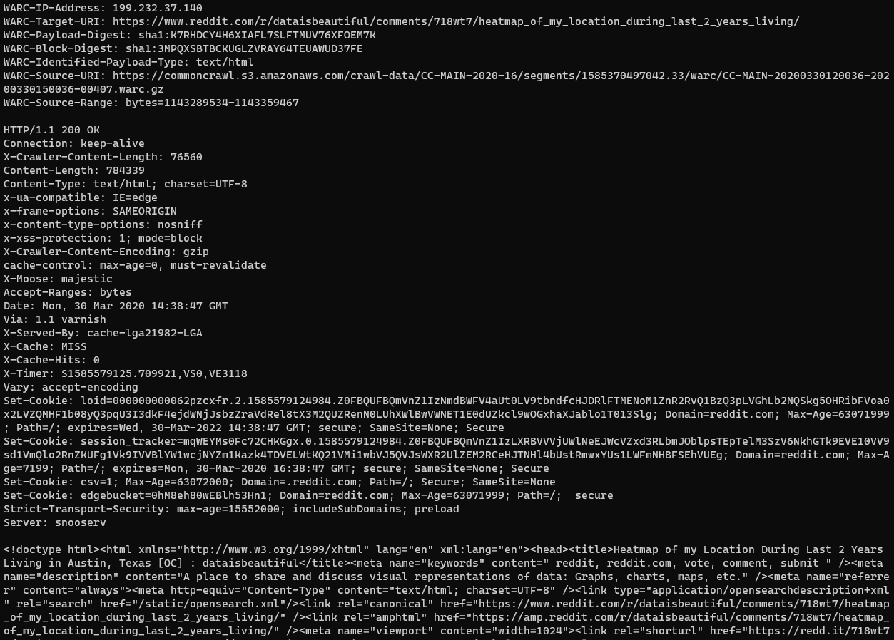
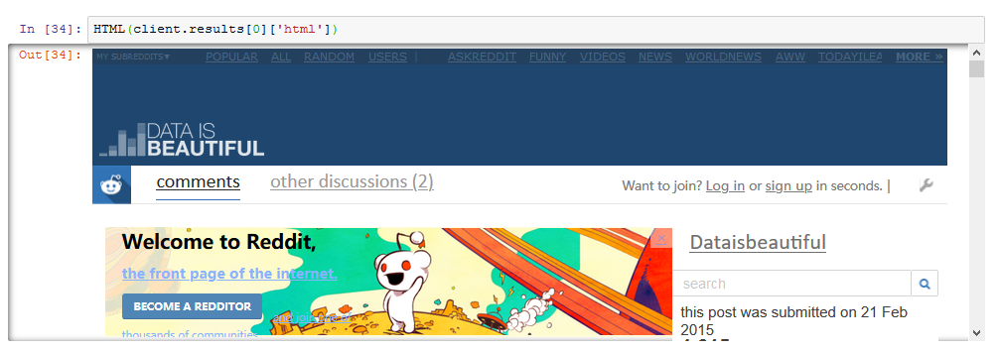

Searching 100 Billion Webpages Pages With Capture Index
Common Crawl builds an open dataset containing over 100 billion unique items downloaded from the internet. Every month they use Apache Nutch to follow links accross the web and download over a billion unique items to Amazon S3, and have data back to 2008. This is like what Google and Bing do to build their search engines, the difference being that Common Crawl provides their data to the world for free.
But how do you find for a particular webpage in petabytes of data? Common Crawl provides two types of indexes for this: the Common Crawl Capture Index (CDX) and the Columnar Index. This article talks about the CDX Index Server and a future article will talk about the more powerful columnar index.
Common Crawl tries to do a broad search, getting a wide sample of the web rather than a deep sample of a few websites, and respects robots.txt so not every page will be in there. It’s useful to know whether Common Crawl even contains the information you’re looking before you start, and the index will tell you where to look.
This article covers using the web interface for quickly checking what’s there, using cdx_toolkit to get and download results from the command line or Python, and using the index and fetching with HTTP requests for custom usecases. There are other tools as well like the CDX Index Client for command line use and comcrawl from python, but they seem less flexible than the other options.
See the corresponding Jupyter notebook (raw) for more code examples.
Using the Web Interface
Go to the Common Crawl Index Server and select a Search Page from the left column. Note that the crawl names are CC-MAIN-<YYYY>-<WW> where <YYYY>-<WW> is the crawl ISO 8601 Week Date. Then you can type your website and can have a wildcard at the end of the URL or in the domain. It will then return JSON lines of results showing the URLs and the metadata you need to find them.
For example in the 2020-16 crawl if I type https://www.reddit.com/r/dataisbeautiful/* I get 43 results. I can see the first result is https://www.reddit.com/r/dataisbeautiful/comments/718wt7/heatmap_of_my_location_during_last_2_years_living/, that the HTTP status was 200 (it was successfully retrieved) and that the archived HTML is available in segment 1585370497042.33.
I could also look for all subdomains of a particular domain. For example Learn Bayes Stats has a website https://learnbayesstats.anvil.app/ which is a subdomain of anvil.app. We can find other websites created with anvil by searching for *.anvil.app giving 48 results.
CDX Toolkit
CDX Toolkit gives a way to search the indexes of both Common Crawl and Internet Archive in a straightforward way. It provides a useful command line and Python interface, and is highly flexible and relatively straightforward to use. I would recommend it as a starting point with Common Crawl, but haven’t tested it’s speed on large amounts of data. It’s easy to install with python -m pip install cdx_toolkit.
CDX Toolkit in the Command Line
You can use it from the command line with cdxt. You can specify a range of dates in the form YYYYMM (not weeks like in the index files!), and whether to return a CSV (default) or lines of JSON:
cdxt --cc --from 202002 --to 202005 iter \
'https://www.reddit.com/r/dataisbeautiful/*'You can pass other arguments to filter the result or customise the fields returned. Here’s an example to count the number of archived pages in dataisbeautiful fetched with 200 OK status between Feb and May 2020 (I removed query parameters with sed because here they are just tracking tags).
cdxt --cc --from 202002 --to 202005 \
--filter '=status:200' iter \
'https://www.reddit.com/r/dataisbeautiful/*' \
--fields url | \
sed 's/\?.*//' | \
sort -u | \
wc -lYou can easily switch from Common Crawl with -cc to the Internet Archive’s Wayback Machine with -ia (but it doesn’t support all the same filters).
cdxt --ia --from 202002 --to 202005 iter \
'https://www.reddit.com/r/dataisbeautiful/*'You can download the Web Archive content using the warc subcommand.
cdxt --cc --from 202002 --to 202005 \
--filter '=status:200' --limit 10 warc \
--prefix DATAISBEAUTIFUL \
'https://www.reddit.com/r/dataisbeautiful/*'A bunch of Nones get printed to the screen and produces a file DATAISBEAUTIFUL-000000.extracted.warc.gz. A WARC is essentially the HTML preceded by some headers containing metadata about the request and the response. It’s simple enough that you could parse it manually, or you could use the Python warcio library.

CDX Toolkit in Python
You can also use the CDX Toolkit as a library in Python. The API for the CDXFetcher is similar to the CLI except from becomes from_ts:
import cdx_toolkit
cdx = cdx_toolkit.CDXFetcher(source='cc')
objs = list(cdx.iter(url, from_ts='202002', to='202006',
limit=5, filter='=status:200'))
[o.data for o in objs]| urlkey | timestamp | status | mime | url | languages | filename | length | charset | digest | offset | mime-detected |
|---|---|---|---|---|---|---|---|---|---|---|---|
| com,reddit)/r/dataisbeautiful/comments/718wt7/heatmap_of_my_location_during_last_2_years_living | 20200330143847 | 200 | text/html | https://www.reddit.com/r/dataisbeautiful/comments/718wt7/heatmap_of_my_location_during_last_2_years_living/ | eng | crawl-data/CC-MAIN-2020-16/segments/1585370497042.33/warc/CC-MAIN-20200330120036-20200330150036-00407.warc.gz | 69934 | UTF-8 | K7RHDCY4H6XIAFL7SLFTMUV76XFOEM7K | 1143289534 | text/html |
| com,reddit)/r/dataisbeautiful/comments/7wcyiq/this_is_what_8_months_of_roulette_looks_like_oc | 20200408190429 | 200 | text/html | https://www.reddit.com/r/dataisbeautiful/comments/7wcyiq/this_is_what_8_months_of_roulette_looks_like_oc/ | eng | crawl-data/CC-MAIN-2020-16/segments/1585371821680.80/warc/CC-MAIN-20200408170717-20200408201217-00043.warc.gz | 85936 | UTF-8 | 3VQ6OENLZIZGFNY7X3TIYNOYMGLABZFR | 1099976248 | text/html |
| com,reddit)/r/dataisbeautiful/comments/c89mz2/battle_dataviz_battle_for_the_month_of_july_2019/eskzdhd | 20200403174615 | 200 | text/html | https://www.reddit.com/r/dataisbeautiful/comments/c89mz2/battle_dataviz_battle_for_the_month_of_july_2019/eskzdhd/ | eng | crawl-data/CC-MAIN-2020-16/segments/1585370515113.54/warc/CC-MAIN-20200403154746-20200403184746-00236.warc.gz | 23114 | UTF-8 | IS4SLLIK7QHNEAJ23E7H4H5ZK2HEMME3 | 1080275232 | text/html |
| com,reddit)/r/dataisbeautiful/comments/csl706/i_recorded_my_travels_as_a_professional_truck | 20200404003226 | 200 | text/html | https://www.reddit.com/r/dataisbeautiful/comments/csl706/i_recorded_my_travels_as_a_professional_truck/ | eng | crawl-data/CC-MAIN-2020-16/segments/1585370518767.60/warc/CC-MAIN-20200403220847-20200404010847-00342.warc.gz | 81851 | UTF-8 | 3BP6SQLMDA3EHICA5TRBNFBCRNDPEOLT | 1106586323 | text/html |
| com,reddit)/r/dataisbeautiful/comments/dp5tda/oc_i_cycled_through_all_the_streets_central_london | 20200331141918 | 200 | text/html | https://www.reddit.com/r/dataisbeautiful/comments/dp5tda/oc_i_cycled_through_all_the_streets_central_london/ | eng | crawl-data/CC-MAIN-2020-16/segments/1585370500482.27/warc/CC-MAIN-20200331115844-20200331145844-00166.warc.gz | 79999 | UTF-8 | POVTU3VOPDUU2CAB2OWZTTBVYGM7HMFX | 1104520094 | text/html |
The raw archived HTML can be retrieved with .content:
from bs4 import BeautifulSoup
html = objs[0].content
soup = BeautifulSoup(html, 'lxml')
soup.head.title.textYou can also get the warcio object with .warc_record
objs[0].warc_record.rec_headers.get_header('WARC-Target-URI')Using the index directly
The Capture Index (CDX) API is just a HTTP endpoint for a compressed text file giving describing the underlying Web Archives. Common Crawl use pywb to serve the index and have a great introductory blog post to CDX. You can access it directly with curl or the Python requests library.
Doing it yourself you have to find the right collections, deal with pagination and retrieve and decompress the content. This is what CDX toolkit handles for you, but sometimes it might be useful to do it directly.
Getting the available collections
First we need to know what indexes are available; this is stored in a JSON file called collinfo.json.
cdx_indexes = requests.get('https://index.commoncrawl.org/collinfo.json').json()This contains JSON data with the id, description, and API locations for each crawl.
| id | name | timegate | cdx-api |
|---|---|---|---|
| CC-MAIN-2020-24 | May 2020 Index | https://index.commoncrawl.org/CC-MAIN-2020-24/ | https://index.commoncrawl.org/CC-MAIN-2020-24-index |
| CC-MAIN-2020-16 | March 2020 Index | https://index.commoncrawl.org/CC-MAIN-2020-16/ | https://index.commoncrawl.org/CC-MAIN-2020-16-index |
| CC-MAIN-2020-10 | February 2020 Index | https://index.commoncrawl.org/CC-MAIN-2020-10/ | https://index.commoncrawl.org/CC-MAIN-2020-10-index |
| CC-MAIN-2020-05 | January 2020 Index | https://index.commoncrawl.org/CC-MAIN-2020-05/ | https://index.commoncrawl.org/CC-MAIN-2020-05-index |
| CC-MAIN-2019-51 | December 2019 Index | https://index.commoncrawl.org/CC-MAIN-2019-51/ | https://index.commoncrawl.org/CC-MAIN-2019-51-index |
| … | … | … | … |
| CC-MAIN-2008-2009 | Index of 2008 - 2009 ARC files | https://index.commoncrawl.org/CC-MAIN-2008-2009/ | https://index.commoncrawl.org/CC-MAIN-2008-2009-index |
If we want to look through multiple collections we would have to query each API endpoint separately. Note that really old indexes use a different id format with a range of years.
Let’s pick the most recent crawl’s API endpoint.
api_url = cdx_indexes[0]['cdx-api']Simple CDX Query
We can then use the cdx-api URL to query the relevant indexes.
r = requests.get(api_url,
params = {
'url': 'reddit.com',
'limit': 10,
'output': 'json'
})
records = [json.loads(line) for line in r.text.split('\n') if line]The JSON records look the same as
| urlkey | timestamp | offset | status | languages | digest | length | mime-detected | filename | charset | mime | url | redirect |
|---|---|---|---|---|---|---|---|---|---|---|---|---|
| com,reddit)/ | 20200525024432 | 873986269 | 200 | eng | C6Y4VCGYLE3NGEWLJNONES6JMNA74IA3 | 40851 | text/html | crawl-data/CC-MAIN-2020-24/segments/1590347387155.10/warc/CC-MAIN-20200525001747-20200525031747-00335.warc.gz | UTF-8 | text/html | https://www.reddit.com/ | nan |
| com,reddit)/ | 20200526071834 | 787273867 | 200 | eng | PHMHCKU365PLDN5UQETZVR4UGMSPDXQJ | 42855 | text/html | crawl-data/CC-MAIN-2020-24/segments/1590347390448.11/warc/CC-MAIN-20200526050333-20200526080333-00335.warc.gz | UTF-8 | text/html | https://www.reddit.com/ | nan |
| com,reddit)/ | 20200526163829 | 3815970 | 200 | nan | X67YXUXXE5GQPMJKMEE6555BNFPIER7L | 35345 | text/html | crawl-data/CC-MAIN-2020-24/segments/1590347391277.13/robotstxt/CC-MAIN-20200526160400-20200526190400-00048.warc.gz | nan | text/html | https://www.reddit.com | nan |
| com,reddit)/ | 20200526165552 | 879974740 | 200 | eng | OSGHIVCFBI47ZSNMLG574K6SBZJ3LTBC | 39146 | text/html | crawl-data/CC-MAIN-2020-24/segments/1590347391277.13/warc/CC-MAIN-20200526160400-20200526190400-00335.warc.gz | UTF-8 | text/html | https://www.reddit.com/ | nan |
| com,reddit)/ | 20200527211917 | 858583595 | 200 | eng | UHM2VERG5OUOELJFD7O25JVUBZVDPDLU | 35751 | text/html | crawl-data/CC-MAIN-2020-24/segments/1590347396163.18/warc/CC-MAIN-20200527204212-20200527234212-00335.warc.gz | UTF-8 | text/html | https://www.reddit.com/ | nan |
Of course you can also query the endpoint directly with curl to get the JSON lines:
curl 'https://index.commoncrawl.org/CC-MAIN-2020-24-index?url=reddit.com&limit=10&output=json'Adding filters and options
We can add additional options like filters and selecting fields, in the same way exposed by cdx_toolkit. Here we filter to results with a status of 200, that were detected to have mime text/html and that have a URL matching the regex .*/comments/ (so have /comments/ somewhere in the URL).
r = requests.get(api_url,
params = {
'url': 'https://www.reddit.com/r/*',
'limit': 10,
'output': 'json',
'fl': 'url,filename,offset,length',
'filter': ['=status:200',
'=mime-detected:text/html',
'~url:.*/comments/']
})
records = [json.loads(line) for line in r.text.split('\n') if line]Handling zero results
When there are no results then the response is a 404 with a JSON error message “No Captures found …”.
r = requests.get(api_url,
params = {
'url': 'skeptric.com/*',
'output': 'json',
})
r.status_code # 404
r.json() # {'error': 'No Captures found for: skeptric.com/*'}Dealing with Pagination
The Common Crawl API by default returns around 15,000 records per page (it’s 5 compressed blocks, which can vary in the number of actual records). You can choose the number of compressed blocks it returns (about 3,000 records per block) with pageSize and the page number with page.
To find the total number of pages you can use the showNumPages=True parameter, which gives back a JSON object containing the pageSize, blocks (total compressed blocks of data) and pages to return. The pageSize is in blocks, so pages = math.ceil(blocks/pageSize).
r = requests.get(api_url,
params = {
'url': '*.wikipedia.org',
'output': 'json',
'showNumPages': True,
})
r.json() # {'pageSize': 5, 'blocks': 2044, 'pages': 409}You can then iterate from page 0 to pages - 1.
r = requests.get(api_url,
params = {
'url': '*.wikipedia.org',
'output': 'json',
'page': 2,
})When you go past the end of the pages you will get a HTTP 400 error response. You could use this to avoid having to ask the number of pages up front, just iterate until you get an error.
r = requests.get(api_url,
params = {
'url': '*.wikipedia.org',
'output': 'json',
'page': 409,
})
r.status_code # 400The response includes information telling you what went wrong (r.text):
<!DOCTYPE html>
<html>
<head>
<link rel="stylesheet" href="/static/__shared/shared.css"/>
</head>
<body>
<h2>Common Crawl Index Server Error</h2>
<b>Page 409 invalid: First Page is 0, Last Page is 408</b>
</body>
</html>Retrieving Content
The CDX queries return a filename which is on S3 and accessible at https://data.commoncrawl.org/. They also contain a offset and length which tells you where in bytes the record data is and how long it is. We can use a Range header to get just this data (since each whole file is around 1GB).
record = records[0]
prefix_url = 'https://data.commoncrawl.org/'
data_url = prefix_url + record['filename']
start_byte = int(record['offset'])
end_byte = start_byte + int(record['length'])
headers = {'Range': f'bytes={start_byte}-{end_byte}'}
r = requests.get(data_url, headers=headers)We then have to decompress the data since it is gzipped. The gzip library only works on files with headers, so we have to decompress using zlib. We need to set wbits to the right value for gzip, otherwise we get Error -3 while decompressing data: incorrect header check.
import zlib
data = zlib.decompress(r.content, wbits = zlib.MAX_WBITS | 16)
print(data.decode('utf-8'))This then gives the WARC request headers, HTTP response headers and full HTML retrieved (I’ve truncated the output because there’s a lot of HTML):
WARC/1.0
WARC-Type: response
WARC-Date: 2020-05-25T02:44:32Z
WARC-Record-ID: <urn:uuid:fa7c243e-d055-469b-bb4f-aa8580bc8330>
Content-Length: 238774
Content-Type: application/http; msgtype=response
WARC-Warcinfo-ID: <urn:uuid:2a234f6f-6796-4962-8c6f-84a6fe8b8945>
WARC-Concurrent-To: <urn:uuid:b7ec4524-bc4a-4da1-906b-6c53f9c9836e>
WARC-IP-Address: 199.232.65.140
WARC-Target-URI: https://www.reddit.com/
WARC-Payload-Digest: sha1:C6Y4VCGYLE3NGEWLJNONES6JMNA74IA3
WARC-Block-Digest: sha1:HJ6BA5YAW24SEPDAYA5NUAXA6RG2UBBJ
WARC-Identified-Payload-Type: text/html
HTTP/1.1 200 OK
Connection: keep-alive
X-Crawler-Content-Length: 41748
Content-Length: 237219
Content-Type: text/html; charset=UTF-8
x-ua-compatible: IE=edge
x-frame-options: SAMEORIGIN
x-content-type-options: nosniff
x-xss-protection: 1; mode=block
X-Crawler-Content-Encoding: gzip
cache-control: max-age=0, must-revalidate
X-Moose: majestic
Accept-Ranges: bytes
Date: Mon, 25 May 2020 02:44:32 GMT
Via: 1.1 varnish
X-Served-By: cache-wdc5543-WDC
X-Cache: MISS
X-Cache-Hits: 0
X-Timer: S1590374672.949570,VS0,VE950
Vary: accept-encoding
Set-Cookie: loid=00000000006kkgzyec.2.1590374671996.Z0FBQUFBQmV5ekVRNHBWX0ZOM3RJb0FRX0FHRzVzNVdlMXY2ejUwdFBxeHJkczRtLUlNR2o1SUxNUGlhSU12WnBsSjFfdmNkYl9fTm9GSUk2SHJHTmdmejUwblMzcnBESm0yZVlYUXBmekNqTVNuQXRTOUpHRndXek9zS1pvVVJxN05HdmVBUmFXZUI; Domain=reddit.com; Max-Age=63071999; Path=/; expires=Wed, 25-May-2022 02:44:32 GMT; secure; SameSite=None; Secure
Set-Cookie: session_tracker=LwR2XV8052i86pF3B7.0.1590374671996.Z0FBQUFBQmV5ekVRZ2tNSkRpM0ZsYUlLcVJtRFBfOXRsREVCRlRPWElkRFpIUkJtODl3dnpnaDloZDM1NXplM0xMZEZialZxT0RhR250cEtTTTdfbXAyT2dqWGYyVVlSOV9TQ2paLUpITWloVkRibGw1SzhyMGo3b0RCdVhNT0tuN0pZSWU3ZE45Nkc; Domain=reddit.com; Max-Age=7199; Path=/; expires=Mon, 25-May-2020 04:44:32 GMT; secure; SameSite=None; Secure
Set-Cookie: csv=1; Max-Age=63072000; Domain=.reddit.com; Path=/; Secure; SameSite=None
Set-Cookie: edgebucket=gwfpIQWim0qQ1ddmdP; Domain=reddit.com; Max-Age=63071999; Path=/; secure
Strict-Transport-Security: max-age=15552000; includeSubDomains; preload
Server: snooserv
<!doctype html><html xmlns="http://www.w3.org/1999/xhtml" lang="en" xml:lang="en"><head><title>reddit: the front page of the internet</title><meta name="keywords" content=" reddit, reddit.com, vote, comment, submit " /><meta name="description" content="Reddit gives you the best of the internet in one place. Get a constantly updating feed of breaking news, fun stories, pics, memes, and videos...Searching and fetching with Python and comcrawl
The comcrawl library makes it easy to search the index and download the data. The interface is a bit simpler than cdx_toolkit, but it doesn’t allow you to pass filters, query the Internet Archive Wayback Machine, or retrieve the request/response metadata. You can install it with python -m pip install commcrawl.
You create an IndexClient with the indexes you want to search and call search
from comcrawl import IndexClient
# Only get results from these two crawls
# Passing no arguments does all crawls
client = IndexClient(['2020-10', '2020-16'])
# If using lots of indexes increase threads to speed it up
client.search('https://www.reddit.com/r/dataisbeautiful/*', threads=1)Then client.results is a list of dictionaries containing the data from the CDX. Here’s the first few results in tabular form.
| urlkey | timestamp | status | mime | url | filename | length | redirect | digest | offset | mime-detected | languages | charset |
|---|---|---|---|---|---|---|---|---|---|---|---|---|
| com,reddit)/r/dataisbeautiful/comments/2wlsvz/why_the_mlb_rule_changes_since_2004_game_time_is | 20200217065457 | 301 | unk | http://www.reddit.com/r/dataisbeautiful/comments/2wlsvz/why_the_mlb_rule_changes_since_2004_game_time_is/ | crawl-data/CC-MAIN-2020-10/segments/1581875141749.3/crawldiagnostics/CC-MAIN-20200217055517-20200217085517-00493.warc.gz | 679 | https://www.reddit.com/r/dataisbeautiful/comments/2wlsvz/why_the_mlb_rule_changes_since_2004_game_time_is/ | 3I42H3S6NNFQ2MSVX7XZKYAYSCX5QBYJ | 13689701 | application/octet-stream | nan | nan |
| com,reddit)/r/dataisbeautiful/comments/2wlsvz/why_the_mlb_rule_changes_since_2004_game_time_is | 20200217065459 | 200 | text/html | https://www.reddit.com/r/dataisbeautiful/comments/2wlsvz/why_the_mlb_rule_changes_since_2004_game_time_is/ | crawl-data/CC-MAIN-2020-10/segments/1581875141749.3/warc/CC-MAIN-20200217055517-20200217085517-00108.warc.gz | 74716 | nan | L4C22PRVUOGG22PXMKSB7KYVCWQUKEQ7 | 915522267 | text/html | eng | UTF-8 |
| com,reddit)/r/dataisbeautiful/comments/7f2sfy/natural_language_processing_techniques_used_to/dq9qzkh | 20200223060640 | 200 | text/html | https://www.reddit.com/r/dataisbeautiful/comments/7f2sfy/natural_language_processing_techniques_used_to/dq9qzkh/ | crawl-data/CC-MAIN-2020-10/segments/1581875145746.24/warc/CC-MAIN-20200223032129-20200223062129-00153.warc.gz | 29470 | nan | GEWEQE4I2JOSKTL3QXPEI7FXVI3BP52O | 884674375 | text/html | eng | UTF-8 |
| com,reddit)/r/dataisbeautiful/comments/7jbefu/four_years_of_initial_coin_offerings_in_one | 20200217195615 | 200 | text/html | https://www.reddit.com/r/dataisbeautiful/comments/7jbefu/four_years_of_initial_coin_offerings_in_one/ | crawl-data/CC-MAIN-2020-10/segments/1581875143079.30/warc/CC-MAIN-20200217175826-20200217205826-00313.warc.gz | 21516 | nan | 42HZLBLZI5DQYGQAZNUAQ5NRCMEEVERW | 890110347 | text/html | eng | UTF-8 |
| com,reddit)/r/dataisbeautiful/comments/8f1rk7/united_states_of_apathy_2016_us_presidential | 20200222202649 | 200 | text/html | https://www.reddit.com/r/dataisbeautiful/comments/8f1rk7/united_states_of_apathy_2016_us_presidential/ | crawl-data/CC-MAIN-2020-10/segments/1581875145713.39/warc/CC-MAIN-20200222180557-20200222210557-00466.warc.gz | 95956 | nan | IDKDLHSVB7YH3L2AUIMKPJFER3VLBZRU | 859518253 | text/html | eng | UTF-8 |
Notice that the first result has a status 301; let’s filter to the first 2 ok results and download their data. The download method downloads every record in results and adds a html field with the raw HTML Common Crawl fetched.
client.results = [res for res in client.results if res['status'] == '200'][:2]
client.results(threads=1)You can then process the HTML with beautifulsoup or even display it in a Jupyter notebook with IPython.display.HTML (though this may fetch a bunch of assets from the internet, and the CSS may make your notebook funny):
from IPython.display import HTML
HTML(client.results[0]['html'])